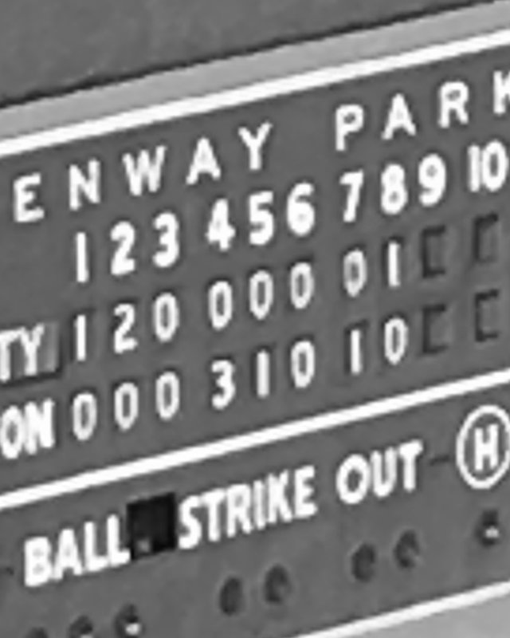
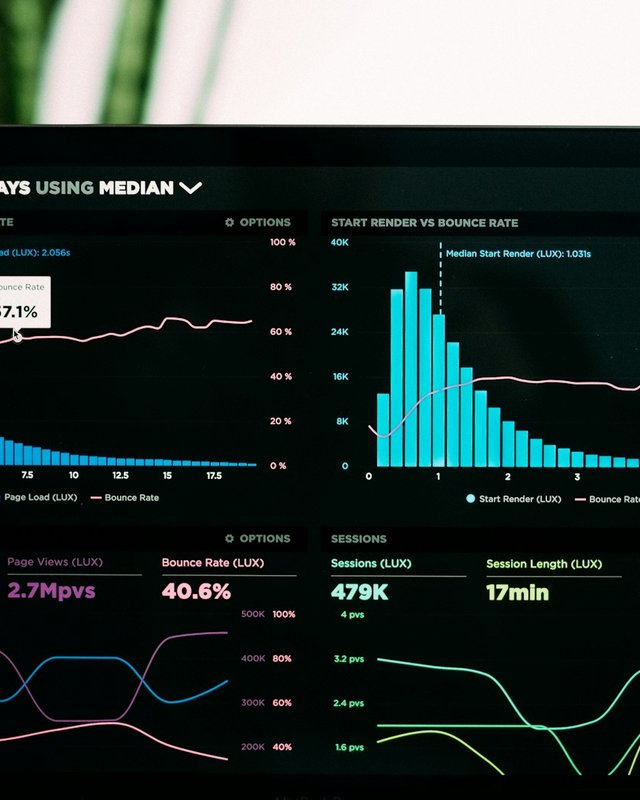
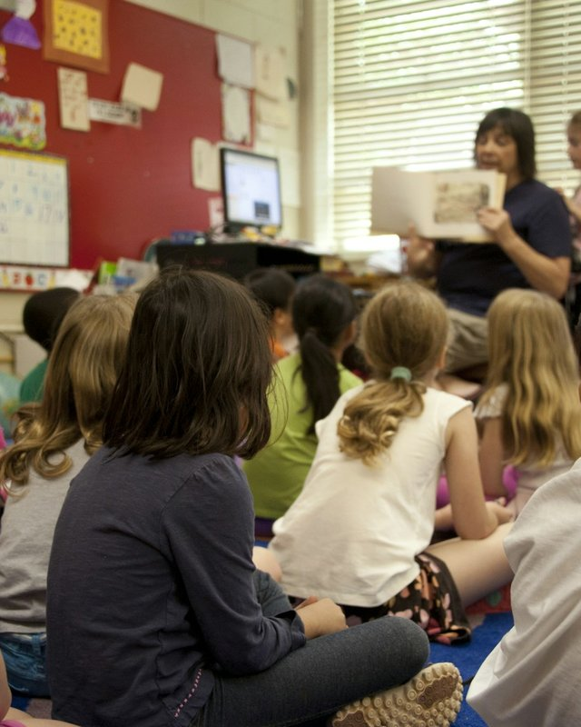
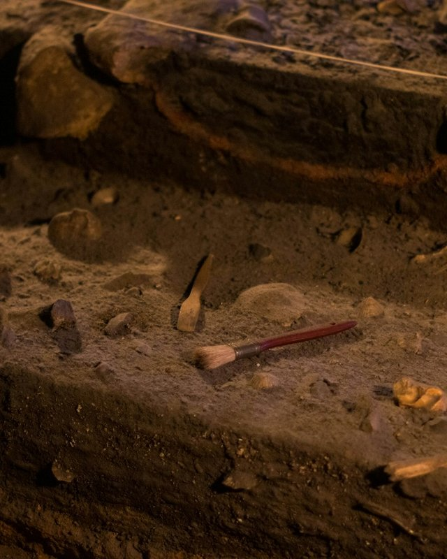

Trader ITrader I
Caesars Sportsbook · August 2024 – current · Las Vegas, NV Caesars Sportsbook · agosto de 2024 – actualidad · Las Vegas, NV
Working in sports was something I'd wanted my whole career—finally, I could apply everything I'd learned in a domain I genuinely cared about. The theoretical knowledge from university, the practical discipline from Nance's, the systems thinking from teaching, the ability to see impact from case work—it all converged here. But what surprised me was the scale. A 24/7/365 operation isn't a theory exercise. I learned to appreciate every role in that machine: engineers building infrastructure, programmers writing the code, analysts tracking performance, management holding vision, stakeholders managing constraints, and users depending on it all working. I could see how it all coalesces, how one person's work ripples through the whole system.
Trabajar en deportes era algo que había querido toda mi carrera — por fin podía aplicar todo lo que había aprendido en un ámbito que realmente me importaba. El conocimiento teórico de la universidad, la disciplina práctica de Nance's, el pensamiento sistemático de la enseñanza, la capacidad de ver el impacto del trabajo social — todo convergió aquí. Pero lo que me sorprendió fue la escala. Una operación 24/7/365 no es un ejercicio teórico. Aprendí a apreciar cada rol dentro de esa maquinaria: ingenieros construyendo infraestructura, programadores escribiendo el código, analistas monitoreando el rendimiento, gerencia sosteniendo la visión, partes interesadas manejando restricciones, y usuarios dependiendo de que todo funcionara. Pude ver cómo todo se une, cómo el trabajo de una persona repercute en todo el sistema.
With that said, I've accomplished what I set out to do here. I've applied my skills to a domain I care about, learned how complex systems operate at scale, and proven I can deliver. But I've also learned something more important: the work I'm most interested in is the infrastructure itself—the systems that make everything else possible. That's where I want to focus next: building the pipelines, architecting the data layers, designing the systems that others can depend on.
Dicho esto, he logrado lo que me propuse aquí. He aplicado mis habilidades a un ámbito que me importa, aprendí cómo operan los sistemas complejos a gran escala, y demostré que puedo entregar resultados. Pero también aprendí algo más importante: el trabajo que más me interesa es la infraestructura misma — los sistemas que hacen posible todo lo demás. Ahí es donde quiero enfocarme a continuación: construir los pipelines, diseñar las capas de datos, crear los sistemas de los que otros pueden depender.

HR Data AnalystAnalista de Datos de RR. HH.
Nance Staffing · January 2023 – July 2024 · Remote Nance Staffing · enero de 2023 – julio de 2024 · Remoto
Nance's Staffing brought me on as an HR analyst to solve a specific problem: their ATS and standard systems could filter applicants, but the boss wanted flexibility they didn't have. He wasn't just looking to fill positions; he wanted to identify lasting, dedicated employees—the kind you can't spot from a resume alone. I built the pipeline they needed. I created dashboards to observe metrics as applicants moved through the system, and I built tools that let the team adjust things themselves without coming back to me. The work was intense upfront—designing systems, validating data, testing—but once everything was established, it tapered to maintenance. Weekly check-ins, spot fixes, making sure the machine kept running.
Nance's Staffing me contrató como analista de RR. HH. para resolver un problema específico: su ATS y los sistemas estándar podían filtrar postulantes, pero el jefe quería una flexibilidad que esos sistemas no tenían. No buscaba solo llenar vacantes; quería identificar empleados duraderos y comprometidos — el tipo que no se puede detectar solo con un currículum. Construí el pipeline que necesitaban. Creé dashboards para observar métricas a medida que los postulantes avanzaban por el sistema, y construí herramientas que le permitían al equipo hacer ajustes por su cuenta sin tener que volver a mí. El trabajo fue intenso al principio — diseñar sistemas, validar datos, probar — pero una vez que todo quedó establecido, se redujo a mantenimiento. Revisiones semanales, ajustes puntuales, asegurarme de que la máquina siguiera funcionando.
But the real value was what it did for me. For the first time, I was applying what I'd learned in theory to a real problem with real constraints. No expected outcomes, no textbook solutions—just me and a problem that needed solving. The systems only performed as well as I'd prepared them, which meant I couldn't hide behind theory or intentions. I had to make it work. Nance's was patient with me as I figured things out, and that patience mattered. It was my first real step as a practitioner, not just a student. It gave me the confidence to know that I could take what I'd learned and make it real.
Pero el verdadero valor fue lo que hizo por mí. Por primera vez, estaba aplicando lo que había aprendido en teoría a un problema real con restricciones reales. Sin resultados esperados, sin soluciones de libro de texto — solo yo y un problema que necesitaba resolverse. Los sistemas rendían tan bien como yo los hubiera preparado, lo que significaba que no podía esconderme detrás de la teoría ni de las buenas intenciones. Tenía que hacer que funcionara. Nance's fue paciente conmigo mientras iba descubriendo las cosas, y esa paciencia importó. Fue mi primer paso real como profesional, no solo como estudiante. Me dio la confianza de saber que podía tomar lo que había aprendido y hacerlo realidad.
M.S. in Data AnalyticsMaestría en Analítica de Datos
Colorado State University Global Campus · June 2023 Colorado State University Global Campus · junio de 2023
I chose Colorado State's online program because I needed flexibility—I was still working full-time in South Korea—but more importantly, I wanted to specialize in something real. I picked Healthcare Analytics because the Southeast has a dense healthcare industry and an aging population, so it felt like a practical choice. But the degree did something I didn't expect: it opened the world. I was computer literate before, but I didn't understand how extensive and attainable programming could be. Once I got a taste, I had to learn more. Suddenly, what felt impossible became possible. I could write a program to judge writing skills. I could do NLP analysis. I could build language-learning tools. I could assist any field I wanted with software. It sounds cliche, but I felt more capable than I ever had.
Elegí el programa en línea de Colorado State porque necesitaba flexibilidad — todavía trabajaba tiempo completo en Corea del Sur — pero, más importante aún, quería especializarme en algo real. Elegí Analítica en Salud porque el sureste de EE. UU. tiene una industria de salud densa y una población envejecida, así que me pareció una elección práctica. Pero la maestría hizo algo que no esperaba: me abrió el mundo. Ya sabía usar computadoras antes, pero no entendía lo extensa y alcanzable que podía ser la programación. Una vez que la probé, tuve que aprender más. De repente, lo que se sentía imposible se volvió posible. Podía escribir un programa para evaluar habilidades de escritura. Podía hacer análisis de NLP. Podía construir herramientas para aprender idiomas. Podía asistir cualquier campo que quisiera con software. Suena a cliché, pero me sentí más capaz de lo que nunca había estado.
The degree taught me what I actually wanted in life and how I could contribute to goals I cared about. It showed me that systematic thinking—the skill I'd discovered in the classroom—could be applied to building tools, solving problems, making things. It wasn't just about analyzing data; it was about the possibility of creation. The degree was the foundation, but more than that, it was permission to believe I could learn anything I set my mind to.
La maestría me enseñó lo que realmente quería en la vida y cómo podía contribuir a metas que me importaban. Me mostró que el pensamiento sistemático — la habilidad que había descubierto en el salón de clases — podía aplicarse a construir herramientas, resolver problemas, crear cosas. No se trataba solo de analizar datos; se trataba de la posibilidad de crear. La maestría fue la base, pero más que eso, fue el permiso para creer que podía aprender cualquier cosa que me propusiera.

Teaching AbroadEnseñanza en el Extranjero
Reading Town → Lingua Academy — South Korea · 2017–2022 Reading Town → Lingua Academy — Corea del Sur · 2017–2022
I went to South Korea to teach ESL to children ages 5–14 in academy settings designed to mimic American classrooms. What started as an instructor role evolved: I became Head Teacher of a five-person department, which meant I had input on curriculum and pedagogy, but more importantly, I became a bridge between Korean and foreign teachers—interpreting not just language but educational philosophy and classroom culture. I also participated in research visits to other academies to study teaching practices. Over years, I watched kids develop from uncertain to confident, and learned to balance education with play in a way that made difficult lessons stick.
Fui a Corea del Sur a enseñar inglés como segunda lengua a niños de 5 a 14 años, en academias diseñadas para imitar salones de clase estadounidenses. Lo que empezó como un puesto de instructor evolucionó: llegué a ser Profesor Principal de un departamento de cinco personas, lo que significaba que tenía voz en el currículo y la pedagogía, pero más importante aún, me convertí en un puente entre profesores coreanos y extranjeros — interpretando no solo el idioma, sino la filosofía educativa y la cultura del salón de clases. También participé en visitas de investigación a otras academias para estudiar prácticas de enseñanza. Con los años, vi a los niños pasar de inseguros a confiados, y aprendí a equilibrar la educación con el juego de una manera que hacía que las lecciones difíciles se quedaran.
But the deeper learning was about myself. I discovered that I have a systematic way of thinking—if I harness it well, it becomes a tool for accomplishing things I didn't believe I was capable of. I had real public speaking anxiety when I arrived, but over five years, I learned to overcome it. By the end, I could command a classroom of thirty kids, manage a team of teachers, and present to peers. That's not small. It showed me that limitations can be surpassed with enough dedication and creative thinking.
Pero el aprendizaje más profundo fue sobre mí mismo. Descubrí que tengo una forma sistemática de pensar — si la aprovecho bien, se convierte en una herramienta para lograr cosas que no creía posibles para mí. Tenía una ansiedad real de hablar en público cuando llegué, pero en cinco años aprendí a superarla. Al final, podía manejar un salón de treinta niños, dirigir un equipo de profesores y presentar ante mis colegas. Eso no es poco. Me mostró que las limitaciones pueden superarse con suficiente dedicación y pensamiento creativo.
Case WorkTrabajo Social
World Relief — High Point, NC · 2015–2017 World Relief — High Point, NC · 2015–2017
I worked as a Case Aide at World Relief, supporting the caseworkers above me by filling every gap in the pipeline: airport pickups, job training classes, English classes, government program liaison work, food shopping, connecting families with locals from their own countries, verifying and filling out paperwork. It sounds scattered, but it was coherent—I was the bridge between newly resettled families and the infrastructure of their new country. Over two years, I worked with families from more than 40 nations, hundreds of them, speaking countless languages. Family sizes ranged from two or three people to more than twenty.
Trabajé como Asistente de Casos en World Relief, apoyando a los trabajadores sociales por encima de mí y cubriendo cada vacío en el proceso: recogidas en el aeropuerto, clases de capacitación laboral, clases de inglés, trabajo de enlace con programas gubernamentales, compras de comida, conectar a las familias con personas de sus propios países, y verificar y completar papeleo. Suena disperso, pero era coherente — yo era el puente entre las familias recién reasentadas y la infraestructura de su nuevo país. En dos años, trabajé con familias de más de 40 naciones, cientos de ellas, que hablaban innumerables idiomas. El tamaño de las familias iba desde dos o tres personas hasta más de veinte.
The work gave me something rare: the ability to see the result. In most jobs, you ship something and never know if it landed. Here, I watched families move through their first 90 days in the country—the critical window when they had to find jobs and begin contributing. It was beautiful to see them acclimate, to watch them go from confused and overwhelmed to oriented and capable. But beyond that, the work showed me what I actually want from a job: something that has an impact on society, not just on a quarterly report. It also sparked a wanderlust I didn't expect—if these families could build lives in a new country, what could I do in one?
El trabajo me dio algo poco común: la capacidad de ver el resultado. En la mayoría de los empleos, entregas algo y nunca sabes si realmente tuvo impacto. Aquí, vi a las familias atravesar sus primeros 90 días en el país — la ventana crítica en la que debían encontrar trabajo y empezar a contribuir. Fue hermoso verlas adaptarse, verlas pasar de confundidas y abrumadas a orientadas y capaces. Pero más allá de eso, el trabajo me mostró lo que realmente quiero de un empleo: algo que tenga impacto en la sociedad, no solo en un informe trimestral. También despertó en mí unas ganas de viajar que no esperaba — si estas familias podían construir una vida en un país nuevo, ¿qué podría hacer yo en uno?
Small BusinessPequeño Negocio
Broadway Cafe — Greensboro, NC · 2012–2014 Broadway Cafe — Greensboro, NC · 2012–2014
While finishing my undergrad, I opened a small café serving American and Mediterranean breakfast and lunch. It was mine to build, which meant everything—the success, the failure, the grinding daily work—was on me. I learned something that sounds obvious in theory but hits differently in practice: a business advances only as far as you're willing to push it. Everyone talks about hard work paying off, but you don't really understand it until the only person who can make it happen is you. That forced me to build a work ethic that wasn't borrowed from a boss or a deadline—it came from inside.
Mientras terminaba mi licenciatura, abrí un pequeño café que servía desayuno y almuerzo de estilo estadounidense y mediterráneo. Era mío para construir, lo que significaba que todo — el éxito, el fracaso, el trabajo diario y agotador — dependía de mí. Aprendí algo que suena obvio en teoría pero que se siente muy distinto en la práctica: un negocio avanza solo hasta donde estés dispuesto a empujarlo. Todo el mundo habla de que el trabajo duro da frutos, pero no lo entiendes realmente hasta que la única persona que puede lograrlo eres tú. Eso me obligó a construir una ética de trabajo que no venía prestada de un jefe ni de una fecha límite — venía de adentro.
The café made money for a while. Then regulations shifted, and what I could do within the location shrank. But by then, the real lesson had stuck. I'd learned that discipline and focus—the truest forms of these—come from within, not from external structure.
El café generó ganancias por un tiempo. Luego las regulaciones cambiaron, y lo que podía hacer dentro del local se redujo. Pero para entonces, la verdadera lección ya había calado. Había aprendido que la disciplina y el enfoque — en su forma más genuina — vienen de adentro, no de una estructura externa.

B.A. in AnthropologyLicenciatura en Antropología
UNC Greensboro, NC · December 2015 UNC Greensboro, NC · diciembre de 2015
I came to UNC Greensboro to study anthropology because I wanted to understand how humans work—both culturally and physically. The discipline taught me something that stayed: knowledge isn't built on certainty, but on evidence and educated guesses. Most of what we know about the past, we've constructed from fragments, patterns, and inference. That shaped how I think. It taught me rigor in the face of incomplete information, and skepticism toward neat explanations.
Llegué a UNC Greensboro a estudiar antropología porque quería entender cómo funcionan los seres humanos — tanto cultural como físicamente. La disciplina me enseñó algo que se quedó conmigo: el conocimiento no se construye sobre certezas, sino sobre evidencia y conjeturas fundamentadas. La mayor parte de lo que sabemos sobre el pasado lo hemos construido a partir de fragmentos, patrones e inferencia. Eso moldeó mi forma de pensar. Me enseñó rigor frente a la información incompleta, y escepticismo ante las explicaciones demasiado ordenadas.
But more than the theory, I fell in love with the practice of documentation. Anthropology is meticulous work—you're recording details, noticing what others miss, building a case from specifics. That obsession with detail, with the idea that God and Devil live in the small things, stuck with me. And underneath all of it was a simple curiosity: I want to know how things began, how they actually work, and what keeps them going. That curiosity hasn't dimmed. It's just moved from studying cultures and bones to studying systems, markets, and data.
Pero más que la teoría, me enamoré de la práctica de la documentación. La antropología es un trabajo meticuloso — registras detalles, notas lo que otros pasan por alto, construyes un caso a partir de lo específico. Esa obsesión por el detalle, con la idea de que Dios y el Diablo viven en las cosas pequeñas, se quedó conmigo. Y debajo de todo eso había una curiosidad simple: quiero saber cómo empezaron las cosas, cómo funcionan realmente, y qué las mantiene en marcha. Esa curiosidad no se ha apagado. Solo se trasladó de estudiar culturas y huesos a estudiar sistemas, mercados y datos.